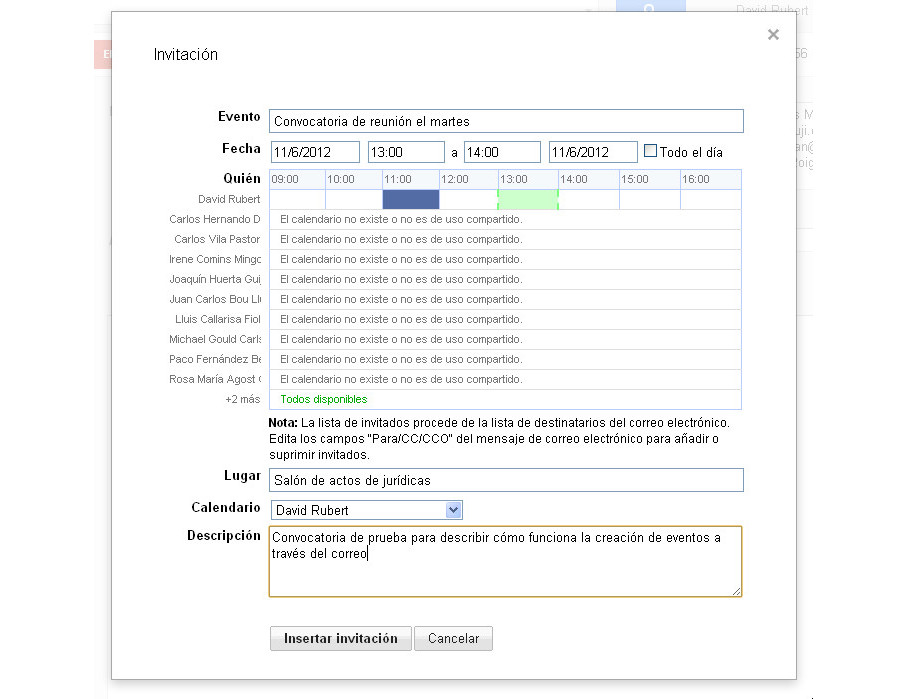
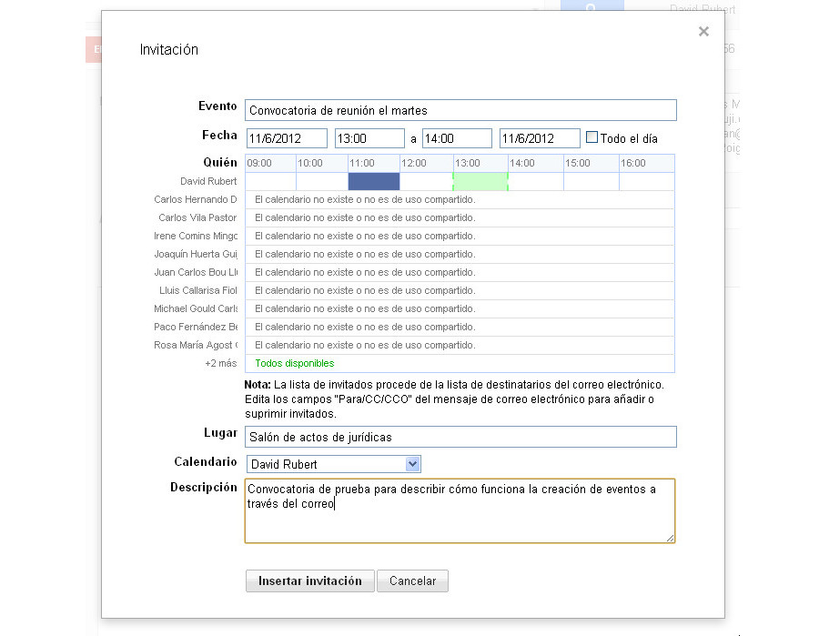
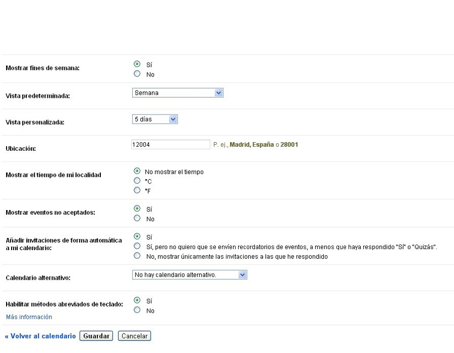
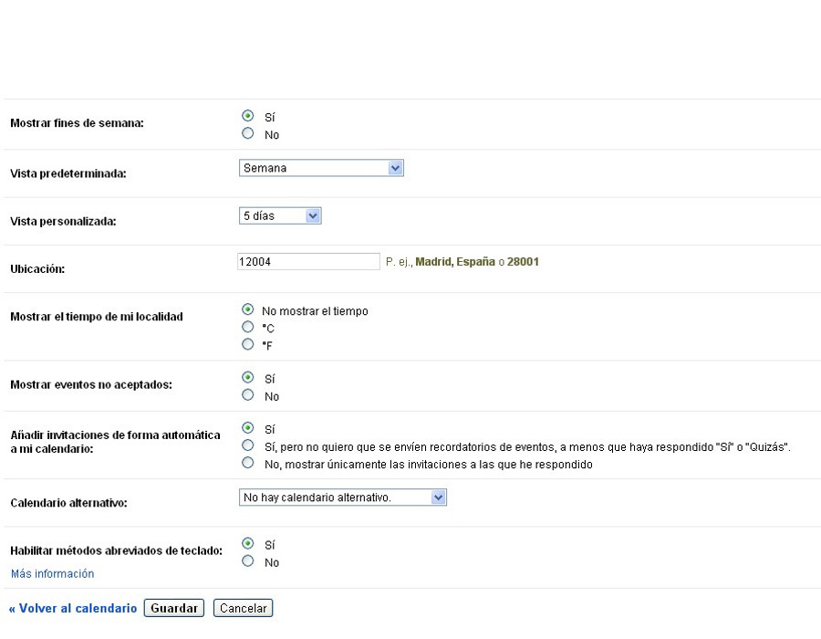
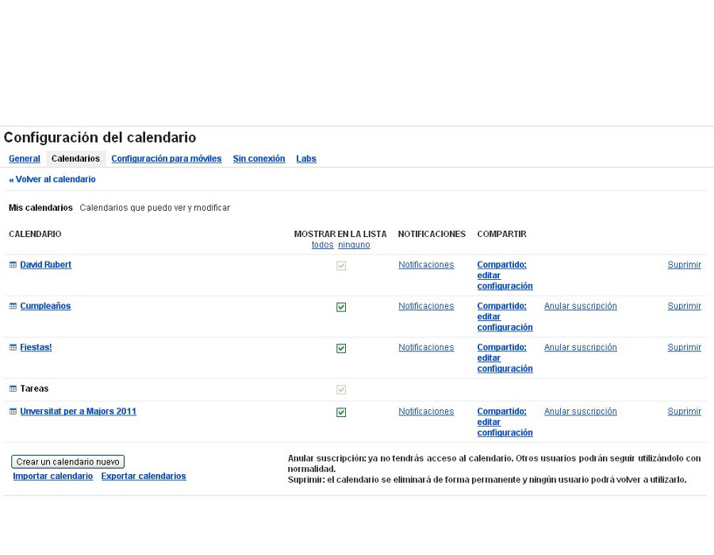
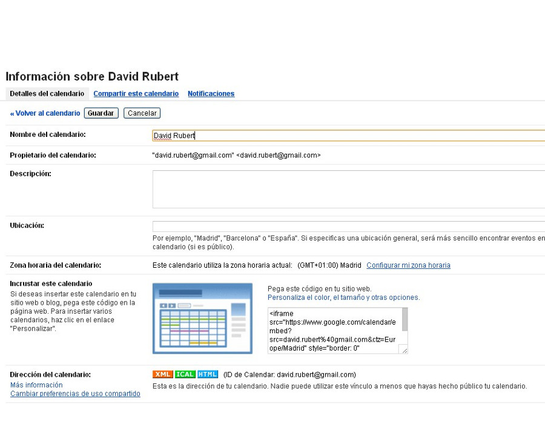
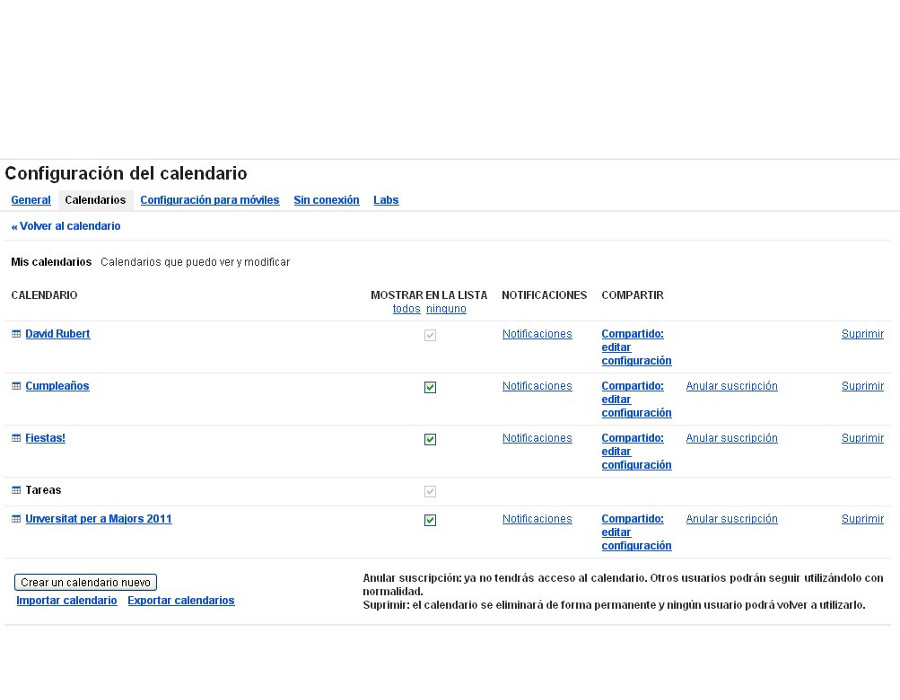
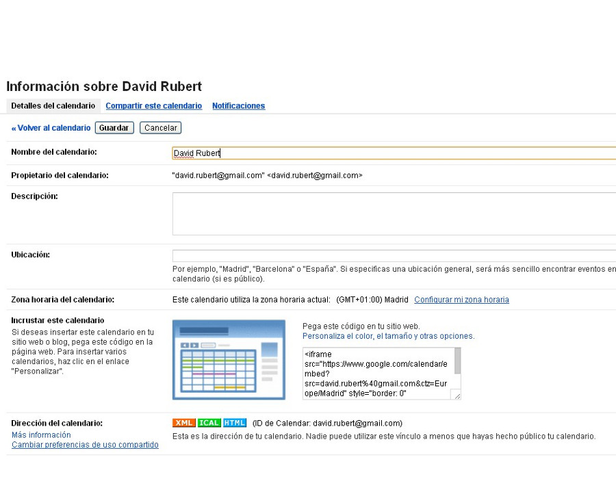
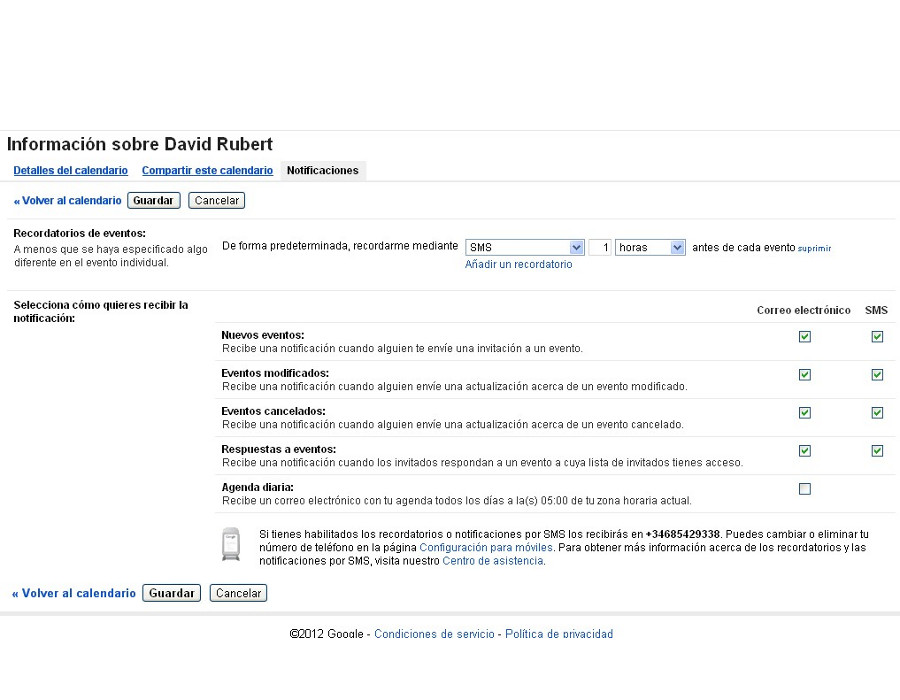
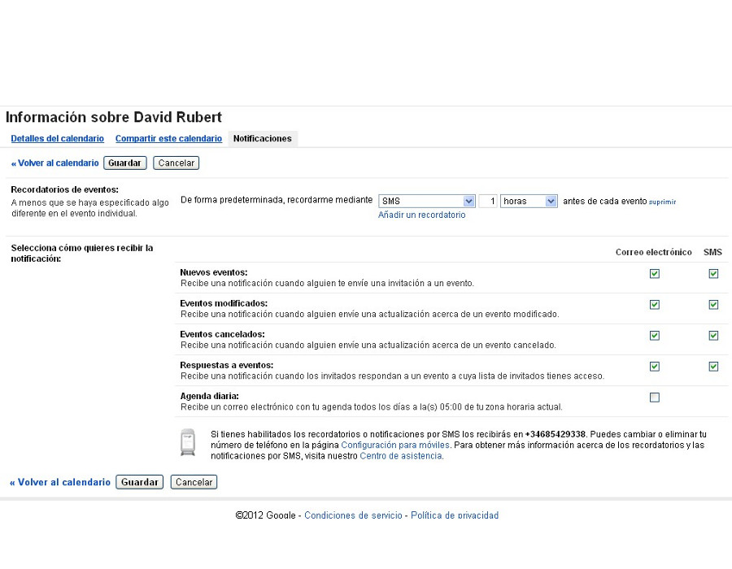

Gestión eficaz del tiempo en el trabajo
calendar
Gestión avanzada
Apreta la tecla → para avanzar.

La funcionalidad básica de Google Calendar ya la tenemos clara, veamos ahora algunos detalles importantes que nos facilitarán el uso del calendario.
Veamos algunos ejemplos de eventos más avanzados, donde se utilicen las funciones más complejas del sistema de eventos, normalmente relacionadas con la repetición.


Cambia de foto con las teclas: ↑ y ↓
Este tipo de eventos se diferencian de los normales en que la cita es conjunta (una reunión, una comida, una partida de tenis), por lo que los asistentes deberán confirmar su asistencia, o proponer otras horas/días.


Cambia de foto con las teclas: ↑ y ↓
Una función que demuestra el nivel de integración de las aplicaciones es la posibilidad de convocar un evento con múltiples asistentes mientras redactamos un correo.
 

Cambia de foto con las teclas: ↑ y ↓

Desde la configuración global de la aplicación podemos personalizar algunos parámetros de la aplicación para ajustarlos a nuestros gustos.
 



Cambia de foto con las teclas: ↑ y ↓
Podemos realizar una configuración personalizada de cada uno de nuestros calendarios, lo que nos permitirá personalizarles los siguientes atributos:
 



 

Cambia de foto con las teclas: ↑ y ↓
Existen algunas funciones activables en Google Calendar, pero que no quieren ponerse a disposición de todo el mundo, porque no se consideran lo suficientemente importantes, o porque todavía estan en fase de pruebas. Son las llamadas Google Labs, y podemos activar aquellas funcionalidades que más nos interesen dentro de esta categoría. Ejemplos:
Cambia de foto con las teclas: ↑ y ↓